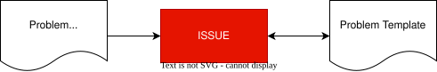
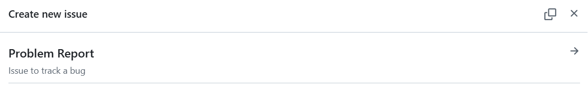
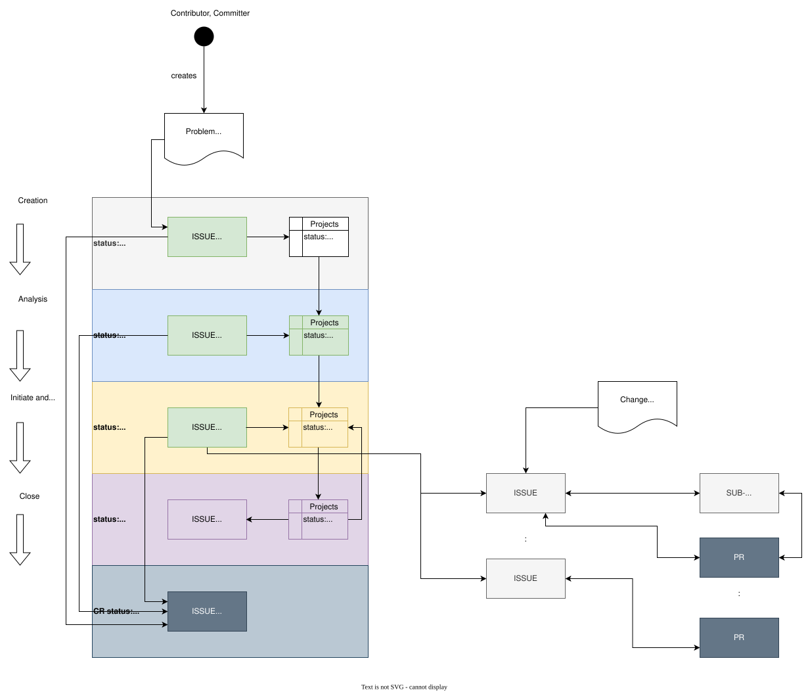

Problem Resolution Plan
|
status: draft
security: YES
safety: ASIL_B
|
||||
Problem Resolution / Problem Resolution Plan#
This document implements parts of the wp__platform_mgmt.
Purpose#
The purpose of the Problem Resolution is to guide the resolution of project problems including their creation, analysis, resolution, and control. Where a problem is defined as a deviation of an expected result.
Objectives and Scope#
Problem Resolution Goals#
Problems are recorded, identified and classified.
Problems are analyzed and assessed to determine an appropriate solution.
Problem resolutions are initiated and monitored.
Problem resolutions are closed and communicated to affected parties.
Approach#
Problem Resolution Execution#
Contributions in general to the S-CORE project are described here (compare Contribution Guideline (doc__contr_guideline)).
A Problem Resolution is a specific contribution, and it is the ONLY way to report problems in the S-CORE project.
Problem Resolution Infrastructure#
GitHub Issues (ISSUE) (doc__issue_guideline) are used for managing problems and their potential resolution. The tool is used to create, analyze, initiate and to monitor the problem reported within S-CORE.
The next figure gives an overview, how problems are created in S-CORE. An ISSUE is used to create a problem report including required attributes as defined in the gd_req__problem_attr_uid.
{kind=link}

Therefore the Problem Template gd_temp__problem_template shall be used.
Note
The template is automatically included in the ISSUE Problem Report. Use ISSUE Problem Report to report a detected problem in S-CORE.
{kind=link}

Problem Resolution Attributes#
The Problem Problem Resolution Process Requirements are implemented as follows:
gd_req__problem_attr_uid is identical to the ISSUE number.
gd_req__problem_attr_status is defined by the combination of the ISSUE state and the state in the Projects dashboard view. The PR status is also used, if applicable.
Status |
Issue status |
Projects dashboard status |
Linked PR status |
|---|---|---|---|
open |
|
|
na |
in review |
|
|
na |
in implementation |
|
|
|
closed |
|
|
|
rejected |
|
na |
na |
gd_req__problem_attr_title is identical to the ISSUE title.
gd_req__problem_attr_impact_description is provided in the Description part of the ISSUE. Add here the root cause and impact of the problem. Optionally state, who has to be informed or notified, if applicable, e.g. Safety Manager of a feature.
Further information can be provided in the Supporting Information part of the ISSUE. Especially “How to reproduce” and “Error occurrence Rate” shall be documented, thus extra parts are provided for that in the ISSUE.
To identify, in which version the problem occurred, use the Affected Version part of the ISSUE.
To provide solutions, use the Solution part of the ISSUE.
gd_req__problem_attr_analysis_results is provided in the analysis results part of the ISSUE. State here, if the problem is accepted or rejected. (Platform and/or Module) Safety/Security Manager must confirm or deny, if safety/security is affected is set correctly
gd_req__problem_attr_stakeholder are provided in the Assignees part of the ISSUE. In addition you can use pre-defined labels for Communities or Feature Teams (Feature Owner) (under discussion, compare https://github.com/eclipse-score/score/issues/870).
gd_req__problem_attr_classification is provided in the Classification part of the ISSUE. Select one of provided identifiers:
Classification identifier |
Label |
|---|---|
minor |
|
major |
|
critical |
|
blocker |
|
gd_req__problem_attr_safety_affected, gd_req__problem_attr_security_affected are provided in the Category part of the ISSUE.
Combinations of them are allowed. If nothing is selected, Quality is affected by default.
Use the ASIL classification part of the ISSUE to document the ASIL level concerned, e.g. ASIL_B.
gd_req__problem_attr_milestone is provided in the Expected Closure Version part of the ISSUE. Optionally the Milestone part of the ISSUE can be set.
Problem Resolution Workflow#
In general, every Problem Resolution follows the following steps:
(color is referring to the following figure: Problem Resolution Simple Workflow Overview)
Create the Problem report (grey color)
Analyze the Problem report (blue color)
Initiate the implementation of the Problem Resolution and track it to closure (yellow color)
Close Problem Resolution (purple color)
gd_guidl__problem_problem can give additional help.
To 1. Create the Problem Report:
An ISSUE is the ONLY way to create and manage a Problem in S-CORE.
The figure below shows the workflow for the simplest case of a Problem Resolution workflow.
An ISSUE Problem Report with the type Bug is created in status Open.
The title of the ISSUE reflects the potential problem. Further fill out the provided template
content accordingly.
Planning is done by setting the Expected Closure Version. Optionally the Milestone of the ISSUE can be set.
Problem status: open is implemented as
ISSUE status Open and Projects status No Status.
To trigger the next step: Problem status: in review
keep the ISSUE status Open and set the Projects status Todo.
To reject the problem report: Problem status: rejected
set the ISSUE status to Closed as not planned.
{kind=link}

Fig. 24 Problem Resolution Simple Workflow Overview#
To 2. Analyze the Problem Report:
The Problem Report is reviewed and analyzed from the rl__committer and the
review results are resolved by the rl__contributor. The results
are documented in the ISSUE. As long as the information is not sufficient, the related ISSUE is
kept in status Open and Projects status Todo, means in review.
If the information is sufficient and it is decided to initiate the problem resolution, the
ISSUE status is kept Open and the Projects status is set to In Progress.
The decision, if the problem is accepted or rejected must be documented. (Platform and/or Module) Safety/Security Manager must confirm or deny, if safety/security is affected is set correctly.
gd_chklst__problem_cr_review can help to verify whether the information is complete.
In case affected parties need to be informed rl__project_lead or rl__delivery_team will notify them.
On platform level, the Project Lead will be added to the assignees of the ISSUE as well as the Platform Safety Manager and/or Security Manager and/or Quality Manager, if applicable.
Notifications will be done for Feature Teams (Feature Teams) by
adding the Feature Team Lead to the assignees of the ISSUE and by
adding optionally the Module Safety Manager and/or Security Manager and/or Quality Manager, if applicable, to the assignees of the ISSUE and by
adding the Feature Team label to the ISSUE
Otherwise, if no Problem Resolution is planned, the problem is rejected. To reject the Problem
Report: Problem status: rejected set the ISSUE status to Closed as not planned.
To 3. Initiate and Monitor the Problem Resolution:
rl__contributor starts all required activities to resolve the problem. These may include starting Change Requests or in general planning activities by creating ISSUEs and required PRs.
All ISSUEs or PRs created to resolve the problem are linked to the Problem Report ISSUE to enable monitoring of the activities.
All activities defined are tracked until closure, means that all linked ISSUEs or PRs are closed or merged, respectively.
If all are closed or merged rl__contributor sets Projects status to
Done to trigger the final review from the rl__committer to close
the Problem Resolution.
The Problem Resolution may also rejected in this phase, then the ISSUE status is set to
Closed as not planned.
To 4. Close the Problem Resolution:
rl__committer checks finally if the problem is completely resolved. In this case all linked ISSUEs or PRs are closed or merged, respectively.
Especially the solution measures must be checked for their effectiveness and the argumentation is convincing.
gd_chklst__problem_cr_review can help to verify whether it can be closed.
If this is the case the ISSUE status is set to Closed, otherwise the Projects status is set
back to In Progress.
Problem Resolution SW Platform Work Products#
The Problem Reports are published in the wp__issue_track_system. S-CORE and its modules use GitHub Issues with the same templates and in the same location per default. If deviating the module has to document this in an own Problem Resolution Plan. S-CORE platform repository issues (Problem Reports are tagged with the Label “Bug”) see here